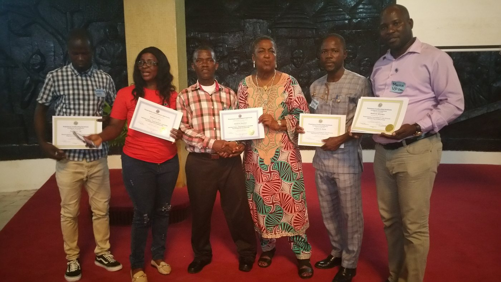
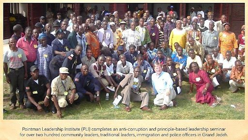
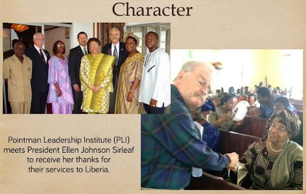

Promoting Principle Base Leadership and Ethics in Management in Liberia with an Aim of Enhancing Good Governance and Democracy

PLI is an International Consortium of educators and former CEOs committed to providing leadership training that will help leaders develop policies, strategies and attitudes needed for more dynamic leadership and efficient organization. These seminars are based on a model using eight strategic ethical principles that empower participants with insight for more effective influence and prepare them to help maintain social order in society.
The PLI has over eighty (80) instructors who present seminars in over 60 countries worldwide to over 55,000 leaders. For more information about PLI, kindly visit the PLI website: www.pliglobal.org
For over 12 years, REAP in partnership with PLI has facilitated over 30 Anti-corruption and Ethics in Management Leadership Seminars that have impacted a cross section of over 5,000 participants including: the Judiciary Branch of Government, Legislative Branch of Government, Executive Branch of Government, Cabinet Ministers, Superintendents, Association of Female Lawyers of Liberia (AFELL), the Liberian National Police, Bureau of Immigration and Naturalization now the Liberia Immigration Service (LIS), the Press Union of Liberia (PUL), Youth Organizations, the Civil Service Agency (CSA), LACC, Churches, Institutions of Higher Learning, ETC.
Objectives
After the 4 days Pointman Leadership Institute Seminar, the participants should be able to:
- Enhance their leadership skills and develop personal moral standards that would help them in public and private sectors management.
- Gain experiences that will be used to help them make commitment to sustaining a culture of good governance and support the national system of leadership training and development.
- Develop creativity, loyalty and initiative in followers and implement lifetime character development for leader and followers
- Provide encouragement and motivation to the participants to infuse a high level of ethics into their areas of works

